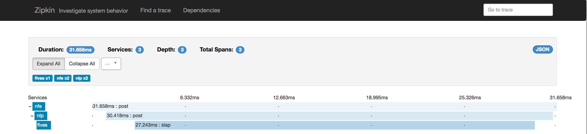

Created: 2017-07-19 Wed 13:36
new ApplicationBootstrap(appConfig)
// configure the main server
.addServer("nfe-main", (bs) -> {
// configure the pipeline
bs.addToPipeline(proxyFragment())
// setup distributed tracing
.configureServerState(this::addServerTracing))
// build the application and start receiving connections
.build()
;
nfe {
application {
servers {
nfe-main {
settings {
bindIp = "0.0.0.0"
bindPort = 80
}
}
}
}
proxy {
routes {
/api/v1/fives {
name = fives
version = v1
url = "http://172.18.242.20"
}
}
}
}
XioClient client = new XioClientBootstrap()
// use an existing EventLoop
.channelConfig(ChannelConfiguration.clientConfig(eventLoop))
.address(config.address)
// enable ssl
.ssl(config.needSSL)
// HTTP client
.applicationProtocol(() -> new HttpClientCodec())
// proxy backend
.handler(new RawBackendHandler(ctx))
// build
.build()
;
// send request
client.write(httpRequest);
// load config from "application.conf"
XioServer server = XioServerBootstrap.fromConfig("xio.testApplication")
// configure pipeline
.addToPipeline(new XioHttp1_1Pipeline(() -> new AppHandler())
// enable tracing
.configureServerState(s -> s.setTracingHandler(tracingHandler))
// build and start receiving connections
.build()
;
